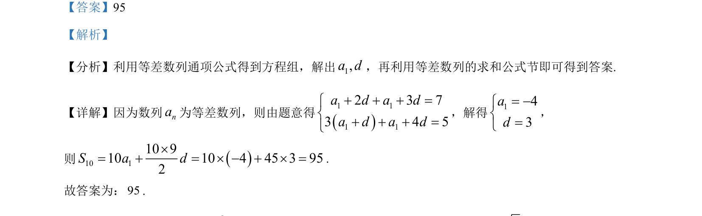

考点：等差数列通项公式 等差数列前n项和 解方程组
该题考查等差数列的通项与求和，通过解方程组求首项和公差，再计算前10项和。

📄 原 PDF 第 12 页：
素材/真题/吉林/2008-2024·（吉林）数学高考真题/2024年高考数学试卷（新课标Ⅱ卷）（解析卷）.pdf
【答案】95 【解析】 【分析】利用等差数列通项公式得到方程组，解出1,a d，再利用等差数列的求和公式节即可得到答案. 【详解】因为数列na为等差数列，则由题意得 1 11 12 3 73 4 5a d a da d a d+ + + =ìí+ + + =î ，解得143ad= -ìí=î ， 则 10 110 910 10 4 45 3 952S a d´= + = ´ - + ´ =. 故答案为：95.